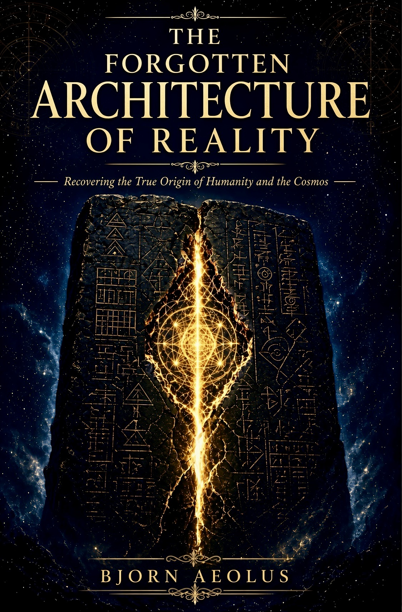

Founding Reader Circle
The inner list for The Forgotten Architecture of Reality.
The free list is for launch notice.
This circle is for people who want the reconstruction while it is still being locked — one page a week, one question a week, founding price that does not survive launch.
You are not buying access to my calendar. You are buying the brief.